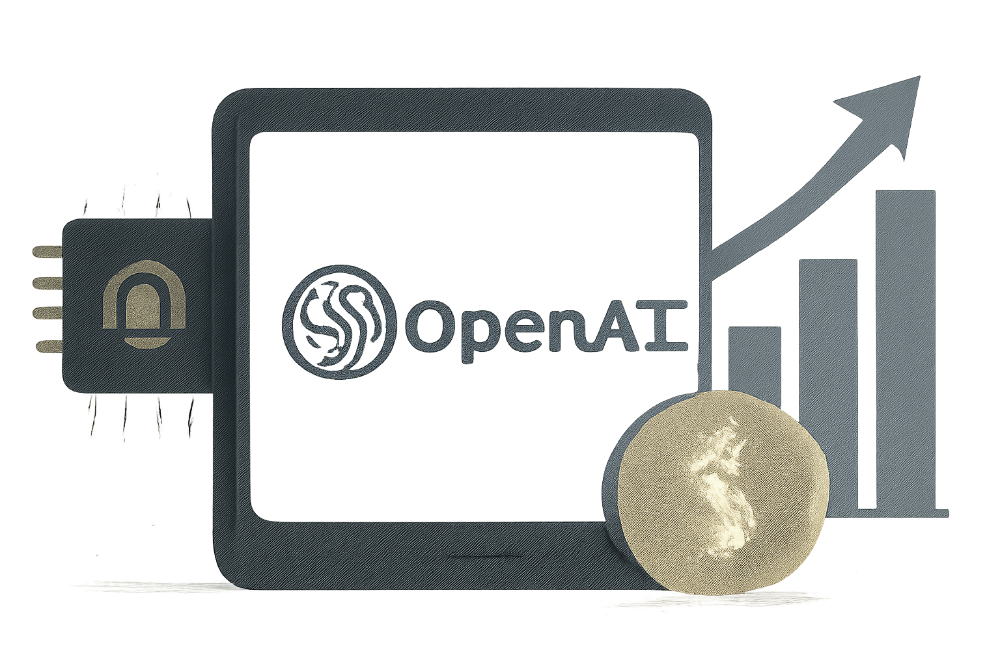

03 OpenAI 게시일 2026.08.31
ChatGPT Ads, 연 10억달러 규모로 확대

AI 서비스는 쓰는 사람이 많아질수록 운영비도 빠르게 늘어난다. 그래서 사용자 확대와 수익 모델을 함께 맞추는 일이 중요하다. OpenAI는 이번에 광고 사업이 그 역할을 하고 있다고 공개했다.
핵심 브리핑
ChatGPT Ads는 ChatGPT 안에서 운영하는 광고 사업이다. OpenAI는 이 사업이 연 환산 매출 10억달러 규모에 도달했다고 밝혔다.
OpenAI는 광고 사업을 글로벌로 넓히고 있다고 설명했다. 회사는 무료와 저렴한 이용 옵션을 넓혀 더 많은 사람이 AI를 쓰게 하겠다는 방향도 함께 제시했다. 다만 이번 발췌에는 국가별 출시 범위나 상품 구조, 광고 표시 방식 같은 세부 조건은 담기지 않았다.
맥락 읽기
이 소식은 OpenAI의 사업 모델이 한 단계 넓어졌다는 신호다. 구독과 API 외에 광고가 의미 있는 축으로 자리 잡기 시작했다.
광고는 이용자 수가 큰 서비스에서 특히 힘을 발휘한다. ChatGPT처럼 대중 접점이 넓은 제품은 무료 이용자를 유지하면서도 매출을 만들 수 있다. 이번 공개문에는 광고 효율 지표나 광고주 구성은 나오지 않았다.
업계의 움직임
아직 공개된 반응은 확인되지 않았다.
시사점과 체크포인트
금융IT 기업은 광고 모델을 그대로 따라 하기보다, 어떤 고객 경험을 해치지 않고 수익을 붙일 수 있는지 먼저 따져야 한다. 특히 금융 서비스는 신뢰와 규제가 핵심이라 광고 문맥 설계가 더 민감하다.
우리 회사라면 아래 질문이 필요하다.
- 고객용 AI 화면에 상업 메시지를 넣을 때 설명 책임과 오인 가능성을 어떻게 통제할 것인가
- 무료 제공 범위를 넓힐 때 운영비를 어떤 수익 모델로 상쇄할 것인가
- 개인화 추천과 광고가 섞일 때 내부 컴플라이언스 기준은 충분한가
이번 발표만으로 광고 모델의 수익성이 모든 기업에 맞는다고 볼 수는 없다. 국가별 규제와 브랜드 정책, 고객 신뢰 비용을 함께 계산해야 한다.
주요 용어
원문 정보
제목: A milestone in expanding access to AI
게시일: 2026.08.31
출처 URL: https://openai.com/index/expanding-access-to-ai-with-chatgpt-ads